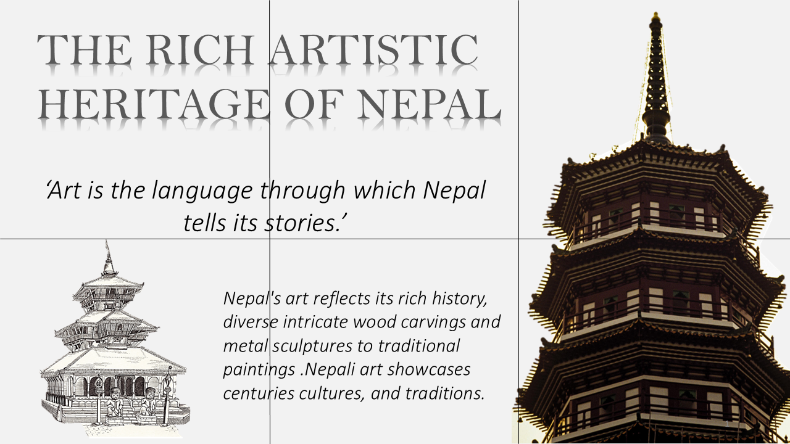

From intricate carvings to handwoven garments, Nepal's artistic traditions celebrate beauty, heritage, and skilled craftsmanship. Each creation carries the spirit of the people who shaped it and filled with heritage.